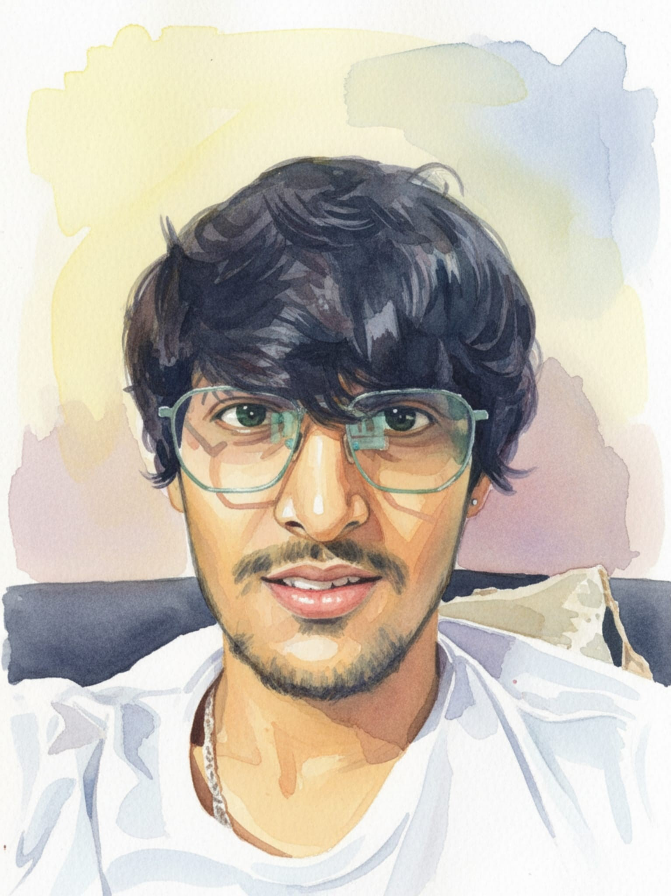

Why I Build Robots

From Curiosity to Engineering
I am a robotics engineer specializing in full-stack architecture, focusing on the seamless integration of mechanical hardware, control software, and artificial intelligence. I am driven by the moment these disciplines converge — whether it's developing autonomous navigation systems or designing custom neural networks for adaptive flight simulations. I don't just write code; I build complete systems that turn complex technical challenges into functional, real-world solutions.
I am currently pursuing my MSc in Robotics Engineering at Middlesex University, building upon my BEng in Mechatronics with a minor specialization in AI and Machine Learning. My background includes developing award-winning, patent-pending self-balancing systems and vision-based specimen handling platforms using high-precision depth sensing. I am particularly interested in narrowing the gap between "what robots can do" and "what we need them to do" through rigorous validation and system optimization.
When I'm not in the lab, you can find me on the field playing competitive cricket, football, or volleyball. I also enjoy the strategic challenge of a chess match and reading new books.
What drives me? The moment hardware, software, and intelligence converge perfectly.